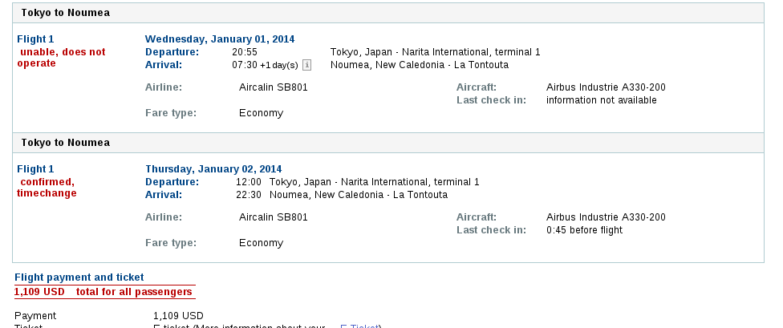

2013-07-10 01:06:19
В общем я, наконец, решился. Блажь, которая, говоря словами классика, "втемяшилась в башку", наконец, стала обретать реализацию. Спасибо авторам Кругосветка на Новый Год в режиме онлайн. Старт 29 декабря. и Быстрая кругосветка. Дурацкая заманчивая идея. Отдельное спасибо вот за эту идею Re: А есть ли какой нибудь способ добраться из Южной/Центральной Америк в Азию минуя США?
Итак, билеты за исключением сегмента BKK-NRT только что куплены, а оставшийся сегмент выпал только потому, что я оставил себе пару дней на подумать: откуда все же начать - из Бангкока или Гонконга?
План такой.
В ночь на 30 декабря вылетаю из Нска в Гонконг, куда прилетаю в 9 утра. Но все же Гонконг в этот раз отложим, плыву в Макао, откуда вечером рейсом AirAsia в Бангкок.
31 декабря - традиционный НГ на кораблике, любуясь салютами над Чао Пхраей. Прямо с корабля еду в аэропорт и в 6 утра вылетаю в Нариту.
Далее маршрут выглядит так.
01.01 - Токио(NRT) - Нумеа, Новая Каледония (NOU)
02.01 - Нумеа, Новая Каледония (NOU) - Таити (PPT). На Таити, вылетев 2-го января, я почему то прилетаю 1-го ;-)
07.01 - Таити (PPT) - Остров Пасхи (IPC)
08.01 - Остров Пасхи (IPC) - Сантьяго (SCL). Здесь зависаю на 9 дней. В общем то первоначальная идея была перелететь оттуда в Боготу, но устав от подыскивания вариантов (об этом позже), решил тупо избрать Сантьяго в качестве базы, а оттуда лететь в Мадрид.
17.01 - Сантьяго(SCL) - Мадрид(MAD). Лечу Дримлайнером - посмотрим, что это за зверь. Лететь 12 часов.
18.01 - Мадрид(MAD) - Стамбул (IST) - Бангкок (BKK). По сути продолжение аццкого перелета из Сантьяго - любопытно, выдержу ли ;-)
Про перелеты.
Первоначальчно хотел воспользоваться Round the World тарифом от oneworld - но у них постоянно выпадают сегменты, которые на сайте самих авиакомпаний доступны. В конце концов, обнаружив на сайте LAN, что перелет (через полмира) PPT-IPC-SCL-MAD стоит всего $ 2,054.70, плюнул и начал покупать билеты индивидуально. Полагаю, что даже с учетом некупленного BKK-NRT билета, я сэкономил 20 тыс. (на НГ даты).
Про визы.
Пока никаких нет. В ближайшее время будет немецкий годичный шенген, но он мне вряд ли поможет, разве что на вылете из Сантьяго. В Новую Каледонию и Французскую Полинезию буду получать национальные визы, благо визовый центр в Нске открылся и ехать в столицу за визами не надо. Смущает транзит в Токио (6-7) часов. Тиматик пишет “Visa required, except for Holders of onward tickets transiting on the same calendar day.” Это как раз мой случай - но все же стоит ли рассчитывать или подстраховаться?
Бюджет.
Без билета BKK-NRT (или HKG-NRT) истрачено где то 160 тыс. Самая дорогая авиакомпания Air Caledonia - на перелет NRT-NOU-PPT - уходит 65 тыс.
Ссылочки
Текущая информация из Тиматика по транзиту через Токио
http://www.timaticweb.com/cgi-bin/tim_c ... er=STARB2C
Текущая информация из Тиматика по визам для Новой Каледонии и Французской Полинезии
http://www.timaticweb.com/cgi-bin/tim_c ... er=STARB2C
По мере появления новостей буду здесь отписываться ;-)
2013-07-10 08:44:55
Буду считать по мере прохождения. Но раз экватор пересеку два раза как положено - то меньше 40 тыс. точно не будет ;-)SunSeeker писал(а) 2013-07-10 03:02:38: сколько км пролетишь подсчитал?
2013-07-19 08:55:26
Буду стараться ;-) Но осознал, что полноценный отчет по итогам вряд ли удосужусь писать. Поэтому и завел эту тему - буду описывать впечатления по ходу.Васильевна писал(а) 2013-07-17 07:22:55: С нетерпением жду отчета!!!!
2013-07-20 11:37:52
Ну да. Я написал ради любопытства в посольство - а нельзя ли въехать по годичному немецкому шенгену? Ответили такFuran писал(а) 2013-07-19 10:46:26: вообще с годовым Шенгеном Франции в Полинезию пускают без проблем.
Пришла все таки транзакция от LAN - теперь можно подсчитать полную стоимость перелетов. Получилось 172,242 руб. В целом это лучше, чем по Round the World тарифу - там билет получался 4500 USD и 64 тыс на Aircalin то есть в районе 210 тыс. Правда по Round the World тарфу я еще посещал Боготу, а теперь надо будет в Колумбию лететь отдельно.Вам необходимо запрашивать дополнительную визу, так как у Вас не долгосрочная виза, которая приравнивается к виду на жительство, а краткосрочная длительная виза.
2013-07-21 17:34:47
Отличный результат! Где-то 310 тыс - 155 на одного. Я в прошлом году приценивался - получалось 110 тыс. без сегмента TYO-NOU-PPT. Но на мои НГ даты случилось что-то непонятное. Сама LAN продает PPT-IPC на 7 января, а на сайте альянса такой билет пропал. Есть на 14-я января, но она меня не устраивает - неделю отпуска добавить к НГ праздникам я могу, а дальше ситуация в плане работы малопредсказуемая.Furan писал(а) 2013-07-20 13:50:59: получилось на двоих 7500 евро. не знаю скока это в долларах.
14 сегментов.
2013-08-25 21:33:40 Antoncp
Ваш "дурной пример" тоже начинает приобретать все признаки заразы. По-крайне мере, для меня. Вдохновился Вашим пересечением Тихого океана, как этапа кругосветки, по маршруту о.Пасхи-Таити. Соответственно, сейчас планирую весь маршрут по схожей схеме Только в направлении на Запад.
Если кому-то еще интересно, то добавив к сложному маршруту PPT-IPC-SCL-MAD Токио в обратном направлении, можно форсировать две третьих мира за 85 тыс. руб. примерно. На Каяке все подбирается по схеме Мадрид-Сантьяго-Пасха-Таити-Токио. Чтоб замкнуть кругосветку на Москву остается добавить Москва-Мадрид и Токио-Москва (например со стоповером в Шанхае или Пекине). Еще где-то 35 тыс. рублей сверху на правильные даты. В сумме кругосветка по билетом из Москвы по такому маршруту выходит около 120 тыс. рублей. Многое еще от курса зависит, сейчас он не очень))
Правда для себя присматриваю такой вариант, немного более дорогой, но, как мне кажется, интересный. Москва-Милан, далее в соседнюю Геную. Оттуда в 29 ноября в Бразилию плывет Costa Fascinosa (18 дней Трансатлантики, с заходом в Марокко, на Канары, Кабо-Верде и пару прибрежных городов Бразилии, прежде чем она приплывает в Рио). Внутренняя каюта на одного стоит около 30 тыс. рублей, если вдвоем - то по 17 тыс. с человека). Далее сложносоставной билет РИО-Гуаякиль-Галапагосы-Кито-Лима-Сантьяго-о.Пасха-Таити-Токио пробивается за 92 тыс.рублей. Здесь, так как даты вокругновогодние цена несколько инфляционная. Новый год отмечается на Пасхе или Таити (скорее всего Муреа, до которого от Таити на пароме). Из Токио вылет на Москву через Шанхай или Пекин. Финиш где-то в районе Новогодних каникул. В сумме на одного по транспорту такой маршрут под 160 тыс. выходит. Если вдвоем, то дешевле за счет корабля в двухместке. Ну а траты в поездке за счет экономии на отелях и прочем - еще больше.
Так что, если кто-то присматривается к чему-то похожему - то буду рад объединить наши поездки.
2013-08-25 21:42:26
Хех - я со 2-го по 6-е января как раз на Муреа ;-)Antoncp писал(а) 2013-08-25 21:33:40: Новый год отмечается на Пасхе или Таити (скорее всего Муреа, до которого от Таити на пароме).
2013-08-25 21:52:19 Antoncp
Тем более) две кругосветные "экспедиции" обменяются приветствиями на встречных курсах, отсалютуют и устремятся дальше))
2013-08-25 22:00:09
Чтобы тема не затухала, поделюсь мучениями. Почему то не продаются на январь ни билеты в Мачу Пикчу, ни на PeruRail из Куско.
Смотрю здесь http://www.machupicchu.gob.pe/ и здесь http://www.perurail.com/
На декабрь продаются.
2013-08-26 19:58:32
Мне во французском ВЦ сказали, что подавать можно не ранее чем за три месяца, то есть со 2-го октября в моем случае. 3-го я как раз прилечу с Октоберфеста и сразу займусь.Furan писал(а) 2013-08-26 19:48:32: автор как там у вас с визами??
Еще несколько смущает транзит через Нариту. Вроде все просто: утром 1-го января вылетаю в Токио, 6 часов пересадки и лечу Новую Каледонию. Но как параноик, тут же представляю ситуацию - подхожу на стойку регистрации Thai, а мне говорят - на рейс не посадим, у тебя визы нет. Вот и думаю, может сделать японскую транзитную? А то не уверен что тыканье Тиматиком поможет, особенно если учесть, что я только что ушел с празднования НГ ;-)
2013-09-18 19:32:51
Пошел читать новость про возможную отмену виз с Южной Кореей и обнаружил, что с 29 июля гражданам России не требуется виза на Фиджи. От жеж блин. Может все переиграть и не мучиться с Французской Полинезией? Но еще пока не проверял можно ли будет составить такой маршрут.
Тиматик
http://www.timaticweb.com/cgi-bin/tim_c ... er=STARB2C
UPD. Не, не получается. С Фиджи непонятно как добраться до Таити, не говоря уже об острове Пасхи.
FOMA07 2013-09-18 21:15:30
С Пасхой там совсем все плохо, надо через Чили добиратьсяС Фиджи непонятно как добраться до Таити, не говоря уже об острове Пасхи
А Фиджи давным давно безвизовые для граждан РФ. Помниться я смотрел и пытался (безуспешно) включить Фиджи в свою кругосветку еще четыре года назад.
Уже тогда виз не надо было.
Вот сообщение от конца июня 2013 года с одного рускоязычного ресурса.Некоторые российские СМИ в очередной раз порадовались отмене государством Фиджи виз для граждан России. Повод, безусловно, приятный, однако наши туристы могут посещать Фиджи без виз уже много лет подряд. Правда, не совсем понятно, почему осознание этого факта дошло до некоторых СМИ лишь сейчас.
Государство Фиджи расположено на одноименных островах в южной части Тихого океана, между Вануату и Самоа. Архипелаг находится приблизительно в 3000 километрах к востоку от Австралии, в 5100 километрах юго-западнее Гавайских островов и в 1930 километрах южнее экватора, образуя своеобразную "подкову" вокруг внутреннего моря Коро.
Безвизовый режим для россиян, желающих съездить на Фиджи, действует давно, сообщает соб.корр. При пересечении границы в загранпаспорт наших туристов бесплатно ставится штамп разрешения на въезд и пребывание в стране сроком на 4 месяца. Допустимо его продление до шести месяцев.
Двустороннее подписание документов на высшем уровне, которое произошло на днях, лишь делает возможным для граждан Фиджи совершать поездки в Россию на таких же условиях. Отрадно осознавать, что СМИ столь искренне радуются приезду фиджийцев в нашу страну. Правда, им к этому следовало бы добавлять, что российских туристов нововведение не касается, поскольку ничего нового не содержит.
2013-09-18 21:47:14
Видимо глюк витал в атмосфере. ;-) У меня в голове тоже почему то отложилось, когда искал билеты, про какой то гемор с визами.FOMA07 писал(а) 2013-09-18 21:15:30: Некоторые российские СМИ в очередной раз порадовались отмене государством Фиджи виз для граждан России.
Antoncp 2013-09-30 20:51:38
Из свежей информации по транзиту через Японию (с учетом того, что наши кругосветные путешествия используют ее как площадку подскока из/в Полинезию)).
Пару недель назад написал письмо в адрес их консульского отдела в посольстве в Москве с описанием различных трактовок транзита, применения правила Shore Pass и всех связанных с этим неясностей. С просьбой все это прояснить. В итоге прошло пару недель- какого-либо ответа с прояснениями так и не получил.
Сегодня не выдержал и позвонил им по телефону. Ответили вежливо, но все также двусмысленно. Так что туманность эта - вполне официальная. Что следует:
1) Безвизовый трехдневный транзит и правило Shore Pass действительно имеются. Однако их применения всецело зависит от решения местного миграционного офицера. Никаких прогнозов и гарантий посольство не дает. Может попробовать, но пустят ли вас неизвестно.
2) Сразу задал второй связанный вопрос. А как с посадкой на борт самолета в Токио, не откажет ли авиакомпания по причине отсутствия визы. Было сказано, что им известны только некоторые такие случаи с Аэрофлотом при полете из Москвы в Японию. Насчет остальных не знают, но вероятность отказа там явно меньшая. Опять никаких гарантий, мы за политику авиакомпаний не отвечаем.
3) В моем случае - прилетаю с Таити в обед 6 января, улетаю 7 января тоже в обед. Все через Нариту, а Нарита на ночь закрывается. Спросил, как поступят со мной, если мне будет отказано в Shore Pass. Сказали, что про стерильную ночную зону в Нарите они не знают, поэтому с большей долей вероятности меня попробуют депортировать ближайшим рейсом.
Вообще создается ощущение, что с этим вопросом им звонят часто, на что они и ссылаются. При этом универсальный ответ - мы вам рекомендуем сделать транзитную визу. Кстати, делается она и без личного присутствия. Достаточно собрать документы, написать доверенность от руки и выслать все знакомому в Москву. Он приезжает в посольство и тут же на месте принимается решение о выдаче или невыдаче транзитной визы. Она бесплатная.
FOMA07 2013-09-30 20:55:19
Жесть конечно, особенно с учетом того, что если в кругосветном билете пропустить не по вине авиакомпании хотя бы один сегмент, то все остальные сегменты аннулируются.с большей долей вероятности меня попробуют депортировать ближайшим рейсом
Надо делать транзитную визу, чтобы снизить риски.
2013-10-15 00:36:52
Сдал сегодня паспорт на визу TOM (Французские заморские территории) в новосибирском ВЦ. Действующий годовой немецкий шенген вызвал некое замешательство у девушек-консультантов. Попросили присесть и подождать пока они проконсультируются с консульством. Пришлось сидеть и ждать полтора часа. В конце концов документы взяли.
Теперь ждать 10-14 дней. Удачи мне ;-)
2013-10-16 10:42:02
Билеты на PeruRail до Мачу-Пикчу я купил. Но с билетами в сам Мачу-Пикчу оказалась небольшая загвоздка. Пишут на Трипэдвайзере.
I was curious of the official response, so I sent an E-mail to yje official website asking when will be tickets available for January. The response came in 2 days:
"The tickets for 2014 will be available on the last week of December, please be patient and check our website http://www.machupicchu.gob.pe in December."
Ладно будем прорываться в последний момент ;-)
Furan 2013-10-20 16:12:51
Спасибо за информацию и обновления в этой теме)
я уже стартанул. Сейчас вот на Мальдивах. Суперски) проблема виз меня больше не волнует вроде все получено...
единственное что нужно это наверное вакцина от Желтой Лихорадки. Нужен сертификат для въезда в некоторые страны Латинской Америки. Эквадор например. Кто что думает?? кто уже поставил вакцину?? Таблетки от Малярии я купил
буду пить принудительно перед путешествием и во время.
Эмирейтс рулит. ПРоапгредили в Бизнесс на плече Париж-Дубай
2013-10-20 19:50:03
Проверил по Тиматику. Для моих странFuran писал(а) 2013-10-20 16:12:51: единственное что нужно это наверное вакцина от Желтой ЛихорадкиВ Колумбии у меня только Богота и Картахена - будем считать что западнее Анд ;-)Chile (CL)
Vaccinations not required.
Peru (PE)
Vaccinations not required.
Recommended:
- Vaccination against yellow fever for all passengers visiting
jungle areas below 2300m in Peru. Travellers who will only
visit the cities of Cuzco and Lima, Machu Picchu and the
Inca trail and some areas west of the Andes, do not need
vaccination.
Colombia (CO)
Vaccinations not required.
Warning:
- Yellow fever vaccination is required for passengers
travelling to Arauca (AUC).
Recommended:
- - Vaccination against Yellow Fever for all passengers aged 9
months or over travelling to the departments at altitudes
below 2300m, except for those travelling to areas west of
the Andes.
FOMA07 2013-10-20 21:44:01
Я ставил. Проблем не было.Кто что думает?? кто уже поставил вакцину??
Сертификат требовали предъявить в Кении и в Австралии (когда въезжал туда из Латинской Америки во время своей кругосветки).
Боливийцы также хотят видеть сертификат если вы собираетесь в джунгли.
Но можете сказать, что не собираетесь.
2013-10-22 17:30:33
Получил паспорт с визой Французской Полинезии. Доставили курьером мне прямо в офис - итого 8 дней.
Забавно, но дали на самом деле две 2 визы. Одна в Новую Каледонию с 1-го по 2-е января, а вторая во Французскую Полинезию со 2-го по 7-е января.
Тут получается забавный момент - дело в том, что из Новой Каледонии я вылетаю 2-го января, а на Таити прилетаю 1-го в 21:35. Интересно - между ними есть паспортный контроль? ;-) А то придется 2 с половиной часа ждать пока виза начнет действовать. Или может им все равно?
Furan 2013-10-22 17:39:37
Зря вы так сделали)) я тоже получил Полинезию с косяком)) прилет то по датам...я чел что на 1 день раньше а вот пребывание буду на 2 дня больше положенного))
вас могут не пустить просто...придется подождать полуночи и тогда велкам.
как же вы так неосмотрительно то подались....
2013-10-22 18:00:25
А как было осмотрительно? ;-) Просил ОДНУ визу c 1-го по 7-е на Tahiti, а в качестве страны первого въезда была указана Новая Каледония.Furan писал(а) 2013-10-22 17:39:37:
как же вы так неосмотрительно то подались....
Ладно, 2.5 часа можно и посидеть перед паспортным контролем. Однажды 5 часов просидел в Гуанчжоу прежде чем пустили ;-)
2013-10-23 00:16:52
Все билеты прикладывал конечно же. С другой стороны, может они не могут давать пересекающие по датам визы? То есть дать две визы начинающиеся в один день?Furan писал(а) 2013-10-23 00:11:05: вы ведь показали билеты? тупоголовые сидят не знают что разница во времени?
Есть смутное подозрение что это довольно частая ситуация для тех кто прилетает с запада. Будем надеяться, что таитянские пограничники лояльно к этому относятся.
Да, кстати, на обеих визах написано MULT ;-)
2013-11-03 15:30:10
Посчитал, что имея 5.5 часов между рейсами в Новой Каледонии, глупо тратить их сидя в аэропорту. Написал в пару местных турагентств. Вот отсюда sweetytours@hotmail.fr предложили повозить меня 4 часа по Нумеа с пикапом в аэропорту всего за 6500 франков, или 2400 руб. на наши деньги.
Цена несколько удивила, поскольку по сведениям LP и TripAdviser цена на такси из аэропорта стоит не меньше 10 тыс. Ладно посмотрим, что получится.
vyach 2013-11-08 17:10:16
До Фиджи можно было улететь из Гонконга(Fiji Airways) 2 января,затем перелететь в Ноумеа(Aircalin) или вначале в Вануату,затем в Ноумеа ,далее по маршруту.zhaffsky писал(а) 2013-09-18 19:32:51:Пошел читать новость про возможную отмену виз с Южной Кореей и обнаружил, что с 29 июля гражданам России не требуется виза на Фиджи. От жеж блин. Может все переиграть и не мучиться с Французской Полинезией? Но еще пока не проверял можно ли будет составить такой маршрут.
Тиматик
http://www.timaticweb.com/cgi-bin/tim_c ... er=STARB2C
UPD. Не, не получается. С Фиджи непонятно как добраться до Таити, не говоря уже об острове Пасхи.
2013-11-08 21:10:40
Спасибо! Но все же не буду теперь уже метаться. Мечту Трумана Бурбанка будем исполнять в другой раз ;-)vyach писал(а) 2013-11-08 17:10:16:До Фиджи можно было улететь из Гонконга(Fiji Airways) 2 января,затем перелететь в Ноумеа(Aircalin) или вначале в Вануату,затем в Ноумеа ,далее по маршруту.
2013-11-12 08:37:30
Отдал паспорт на транзитную японскую визу. Глупо конечно платить 6 тыс за 5 часов пересадки, но лучше перебдеть ;-)Furan писал(а) 2013-11-12 03:57:32:Интересует как там дела с отправлением и визами у топик стартера.
Ну и с получением японской визы последняя помеха отправлению исчезает. Остается только успеть все по работе до отъезда.
2013-11-30 23:11:02
Сегодня получил паспорт с транзитной японской визой. Какие у них визы красивые однако ;-) Дает право на одноразовый въезд на три дня в течение трех месяцев.
В общем то это неплохая опция, с учетом идущих в Бангкоке протестов. Черт их этих протестующих знает, вдруг опять вздумают использовать проверенную террористическую тактику с захватом аэропортов (тьфу тьфу тьфу). Поскольку прилетаю в Гонконг 30-го, то при неблагоприятном развитии событий, можно будет начать путешествие с него.
2013-12-24 14:46:51
Ну вот похоже и облом :( Aircalin сдвинул рейс из Токио в Новую Каледонию почти на сутки. В результате не попадаю на следующий рейс до Таити. А других рейсов до 7-го из Новой Каледонии на Таити вроде бы нет. Приплыли.
FOMA07 2013-12-24 14:55:28
У вас единый кругосветный билет или множество разных?
У меня в кругосветном билете два раза переносили рейсы, но поскольку билет был единый, то предлагали альтернативу в виде других рейсов, чтобы не было опозданий.
Если не предлагают, то звоните/пишите в компанию, где покупали кругосветный билет.
Если множество разных, то печально, попробуйте альтернативные варианты (если они есть).
Вплоть до отказа от какой-либо страны, если такой вариант возможен. Или передвижение по земле/воде
2013-12-24 15:01:24
Спасибо за советы. В том то и дело что разные билеты. Единого билета у меня получалось.
Вариантов пока только вылететь из Токио 4-го числа прямым до Таити на Air Tahiti Nui. Но блин он стоит 5,716 USD. Ну хорошо 2K USD за билеты Aircalin мне вернут. Но все равно 100 дополнительно :(
vyach 2013-12-24 16:45:50
Может стоит пожертвовать новогодним корабликом и 1 января из Гонгонга,через Сеул улететь в Ноумеа,кстати из Сеула летит Aircalin.zhaffsky писал(а)2013-12-24 15:01:24:Спасибо за советы. В том то и дело что разные билеты. Единого билета у меня получалось.
Вариантов пока только вылететь из Токио 4-го числа прямым до Таити на Air Tahiti Nui. Но блин он стоит 5,716 USD. Ну хорошо 2K USD за билеты Aircalin мне вернут. Но все равно 100 дополнительно
2013-12-24 17:00:31
Отличная идея! Спасибо!
vyach 2013-12-24 19:05:28
Этот Aircalin когда поменял вылет рейса?Буду следить за Вашим путешествием,по мере возможности, в т.ч. и в Боготе(13-16.01.14).Удачи.zhaffsky писал(а) 2013-12-24 17:00:31:Отличная идея! Спасибо!
2013-12-24 19:47:39
Пришло письмо сегодняvyach писал(а) 2013-12-24 19:05:28:Этот Aircalin когда поменял вылет рейса?Буду следить за Вашим путешествием,по мере возможности, в т.ч. и в Боготе(13-16.01.14).Удачи.Смотрю, ничего не понимаю - как 2-е января?Thank you for choosing Aircalin. We look forward to welcoming you on board SB801 departing on 02/01/2014. For greater convenience, please read following recommendations
Пошел пробивать по коду брони на сайте а тамThe following warning(s) occured
A schedule change has occurred on this trip. Please contact our call center in case you want to change or cancel this reservation. (15069)
Please note that the Airline has cancelled one or more of your selected flights. Please modify your reservation, or contact your travel agent for further information. (9115)
2013-12-24 19:59:38
Нашел такой вариант вылета из Макао за $1025.
MFM 2:00a ICN 6:25a 3h 25m nonstop
ICN 10:30a NOU 10:05p 9h 35m nonstop
Теоретически можно успеть встретить НГ в каком нибудь казино - и быстро добежать до аэропорта ;-)
2013-12-24 20:27:22
Ну все дурное дело - нехитрое. Купил билет из Макао. vyach'у огроменное спасибо за идею! Жаль не пересечемся в Боготе - я оттуда 12-го вечером улечу.
А от Venetian до аэропорта меньше 2-км - быстрым шагом за 20 минут можно дойти если такси не подвернется ;-)
2013-12-24 22:13:58
Себе на заметку - транзит через ICN https://www.timaticweb.com/cgi-bin/tim_ ... er=STARB2C
C 1-го января въезд для россиян в Южную Корею безвизовый. Но будут ли об этом знать на регистрации в Макао?
vyach 2013-12-25 10:30:42
Может быть и так,что Air Makao не знает об отмене виз,поэтому сделайте запрос в посольство Южной Кореи в Москве,только на английском,а также отправьте письмо в авиакомпанию Air Makao со ссылками на оф.источник,с Вашими бронями,чтобы утрясти до отъезда.Если повезёт,то получите от них ответ.В ином случае распечатайте информацию об отмене виз,которая есть в официальных источниках,думаю вопросов не должно быть.Корейцами из Гонконга проще было бы полететь.zhaffsky писал(а) 2013-12-24 22:13:58:Себе на заметку - транзит через ICN https://www.timaticweb.com/cgi-bin/tim_ ... er=STARB2C
C 1-го января въезд для россиян в Южную Корею безвизовый. Но будут ли об этом знать на регистрации в Макао?
2013-12-25 12:36:47
Да вроде пишут в Тиматике
Это даже сейчас без всякой отмены виз.Visa required, except for Holders of onward tickets transiting
Seoul Incheon (ICN), for a max. transit For details, click here time of
24 hours.